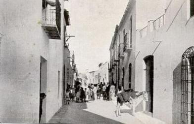

Antas
Antas
es un lugar que combina la belleza natural con una rica herencia cultural, lo que lo convierte en un destino atractivo para quienes buscan conocer la autenticidad de Andalucía.
Información general
Es
lugar que ofrece una mezcla de historia, cultura y naturaleza, ideal para aquellos que buscan experimentar la autenticidad.
Fiestas
Estas Fiestas
son una muestra del rico patrimonio cultural de Antas y una excelente forma de disfrutar de la comunidad y sus tradiciones.
Fiestas en honor a San Isidro
Fecha: Mayo
Actividades:
-Romerias y procesiones
-Eventos culturales y musicales
-Feria de atracciones
Historia de Antas
El origen de Antas es la historia de una riña. El desalojo de los habitantes musulmanes de Vera y Mojácar expulsados de sus casas tras la toma de estas dos ciudades nazaritas en 1488 por las huestes cristianas del Marqués de cadiz. Una vez caídas estas dos ciudades, los habitantes de las alquerías y villas de Bédar, Cabreras, Lubrín, Serena, Sorbas, Teresa y también la ciudad de Mojácar fueron a Vera, capital de la jurisdicción, a rendir homenaje y someterse al rey Don Fernando según cuenta el cronista Bernáldez. Los nombres de Antas y Turre, lógicamente, no aparecen.
Si quieres informarte un poco mas sobre la gran historias de Antas pincha --->Aqui
La población morisca
La primera referencia escrita sobre los habitantes de Antas es el censo fiscal de 1495 estudiado por el profesor Del Cerro Bex según el cual había en Antas 125 vecinos, es decir una población de 562 habitantes aproximadamente. En 1504 encontramos otra referencia, también de impuestos, en el que aparecen 52 vecinos de Antas que pagaron “444 pesantes y seis dinero” lo que no implica que hubieran desaparecido la mitad de los vecinos censados nueve años antes; tratándose de un impuesto especial solicitado por los reyes es posible que sólo se aplicara a los más ricos. De nuevo aparece mencionado Antas en el censo de 1561 con 170 vecinos y, en vísperas del levantamiento de las Alpujarras, otro censo, el de 1568, atribuye a Antas una población de 180 vecinos o sea más de 800 habitantes.
